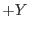
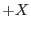

This task operates on event data in an event list. It computes celestial (tangentially projected) coordinates on an event-by-event basis and stores them in pre-existing empty columns X and Y (if these columns do not exist they will be created within attcalc).
Each calculated integer X/Y pixel position is the result of a spacecraft (S/C) aspect-corrected projection of an event's position on the detector onto a plane tangent to the celestial sphere. Thus, the task takes into account the facts that the pointing and position angle of the S/C can vary during the observation, as can in fact the boresight offsets of the individual instruments. The entire set of X/Y pixels can be thought of as representing an image of the observed region of the sky during the entire exposure.
The computed sky pixels, X and Y, shall be `fixed' to a reference point whose equatorial coordinates (R.A.& Dec.) will be stored as standard World-Coordinate-System parameters. (Note: it should be possible for FITS readers such as "kview", "ds9", "Ximage", "saotng" or the FTOOL "xy2sky" to compute the actual R.A./Dec.values of each individual photon.)
The reference point is user-selectable from the following alternatives, chosen via the parameter refpointlabel: it is taken either from the current nominal pointing direction of the S/C (refpointlabel=nom), from the pointing direction of the celestial object in question (refpointlabel=obj), from the mean pointing direction of the S/C during the observation (refpointlabel=pnt), or from any fixed point in the sky given as a user-supplied R.A./Dec. coordinate pair (refpointlabel=user). In the first two cases, the celestial coordinates of the reference point are taken respectively as the values of the RA_NOM,DEC_NOM or RA_OBJ,DEC_OBJ values in the input event file header. RA_NOM and DEC_NOM are the boresight RA/Dec values of the prime instrument (i.e. the proposed pointing), while RA_OBJ and DEC_OBJ are the coordinates of the proposed target. These values are written into the event file header by epframes or emframes. In the third case the mean or median (chosen using the parameter withmedianpnt) pointing direction of the spacecraft over the entire observation is used. This is actually calculated by the task atthkgen (which must be run earlier in the task chain), and placed by attcalc in the event file header as attributes RA_PNT and DEC_PNT (along with PA_PNT). An attribute AVRG_PNT is also written indicating whether the mean or median PNT values have been written. The parameter atthkset is used to give the name of the atthkgen output file. If the atthkgen output (default name atthk.dat) does not exist, a warning message is given, no PNT attributes are propagated to the event file, and, if refpointlabel=pnt is chosen, the RA_NOM, DEC_NOM values are used instead. A boolean parameter withatthkset exists to determine whether the task should access the atthkgen output file or not. In the fourth case, the coordinates of an arbitrary reference point have to be supplied by the user via parameters nominalra and nominaldec.
A string is input to the parameter attitudelabel, determining from which source the attitude data should be obtained. Possible values are: "ahf" (data are to be read from the attitude history file), "om" (data are to be read from OM tracking history file on the ODF) and "fixed" (no data from the ODF shall be used but the S/C's attitude is assumed to be fixed during the observation). Although the OM attitude information may be more accurate, it will not be present throughout part of the observation, and as such, the default source for the attitude data should be "ahf". If "fixed" is chosen, then the attitude information has to be specified via the parameters fixedra, fixeddec and fixedposangle.
The attitude information (obtained from the user, or from the ODF via an OAL call [i.e. not from the atthkgen output file]) is transformed from spherical to parallel or TAN (gnomonic) coordinates (see Greisen E.W., Calabretta M., `Representation of celestial coordinates in FITS' 1995, adass, 4, 233). The boresight offset for the particular instrument in question is then accessed (from the Current Calibration File), and applied to the transformed attitude information. The task takes into account the fact that the pointing and the position angle of the S/C (in the ahf/om cases), and the boresight corrections of the individual detectors can vary during the observation. In cases where the OAL call gives back `invalid pointing data', then the X/Y position of the events in question are set to NULL. The value `INDEF' appears in the X/Y columns for these events.
This boresight-corrected attitude information can then be used to correct each events DETX and DETY into the sky co-ordinates X and Y. Note that the calculation of the boresight-corrected attitude information need only be done for each frame, not for each event. Though the input event file will have many events (perhaps millions), there will only be a few thousand frames, where new boresight-corrected attitude information need be calculated.
The sky coordinates, X and Y are north-oriented, i.e. the central `line' of increasing Y-coordinate (and constant X-coordinate) points towards the celestial north pole ( axis corresponds to increasing values of declination,  axis corresponds to decreasing values of right ascension).
If a specified event list has already been processed with the attcalc task, the columns X and Y shall be re-calculated and a corresponding informative message shall be reported.
In TIMING and BURST modes, attcalc works in exactly the same way: The attitude information is used, as in IMAGING mode, to correct, via the same transformations, each events DETX and DETY into the sky co-ordinates X and Y.